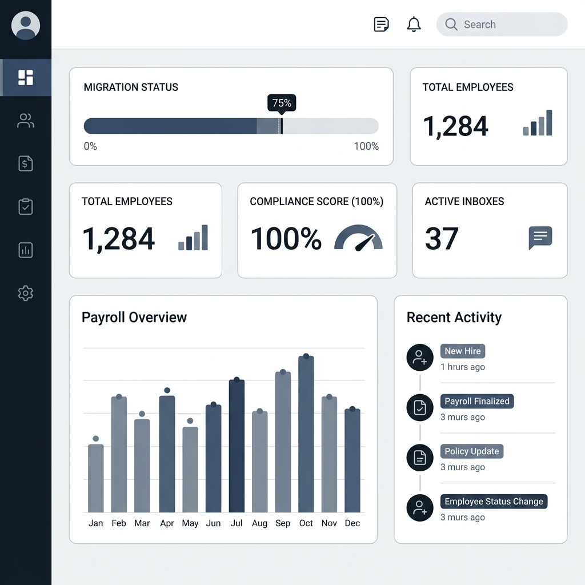

I build complete softwaresystems — cloud to mobile —in weeks, not quarters.
Fractional CTO and systems architect for small and mid-market companies. If you're behind on AI, drowning in manual process, or paying for software that doesn't fit, I design the system, build it, integrate it, and hand you the keys. Most recently: a 118,000-line enterprise staffing platform with 15 integrations — architected, built, and shipped by one person.
fractional CTO · technical program management · AI integration · workflow automation · infrastructure audits
0k
lines of production code, shipped solo
0
HTTP endpoints across web & mobile APIs
0
database models under active management
0
enterprise integrations wired end-to-end
GET /services
Four ways to engage.
Every engagement is custom-scoped, but most work falls into one of these shapes. You won't find prices on a webpage — the honest answer is "it depends on scope," and a thirty-minute call gets you a real number.
sprint-build
Rapid MVP & Product Engineering
An idea, a spec, or a failing legacy tool goes in; a deployed, production-grade system comes out — backend, web, mobile, auth, and infrastructure. The staffing platform below went from empty repository to production in under thirty days.
2–6 weeksFastAPIReact NativePostgreSQLCI/CD
fractional-cto
Fractional CTO & Program Ownership
Senior technical leadership without the full-time hire. I own your roadmap, vendor and stack decisions, developer management, security posture, and cloud spend — and report to you in plain business terms, not jargon.
The "we know we're behind on AI" engagement. I find the workflows burning your team's hours and wire AI into them properly — document processing, screening, summarization, agent tooling — with real engineering, not chatbot demos. I've cut an HR department's manual labor by 97% this way.
A structured review of your architecture, security, vendor contracts, and cloud bills. You get a prioritized, costed roadmap — which you can execute with me, or entirely without me. Either way you'll finally know what you're paying for.
1–2 weeksarchitecturesecuritycloud spend
GET /case-studies/staffing-platform
One person. One month. A complete staffing enterprise.
A staffing agency needed a complete platform — scheduling, payroll, compliance, mobile apps, the works. I architected and built the entire system solo: from empty repository to production in under thirty days, then kept scaling it. These numbers are the system as it runs today.
118k lines of code658 endpoints74 database models56 mobile screens15 integrations1 engineer
staffing-platform — live system architecture · hover or tap any component
system.overview
Hover or tap any component to see what's inside. Every box on this diagram was designed, built, and deployed by one person.
Week 01
Architecture & provisioning
Stack evaluation, data model design, cloud provisioning: serverless PostgreSQL on Neon, Cloudflare R2 object storage, Render and Railway deploy pipelines.
Week 02
Core platform
Async FastAPI backend, SQLAlchemy models, dual session + JWT auth, role-based permissions, and the scheduling engine: events, shifts, assignments, timesheets.
Week 03
Mobile & portals
React Native app on Expo with typed API client and secure token storage; server-rendered admin, client, and employee portals; App Store and Play Store pipelines.
Week 04
Money, compliance, launch
ADP payroll and Xero accounting integrations, digital onboarding with real government forms, geolocation clock-in, push notifications — and production release.
GET /case-studies/operations-platform
The 55-tool operations platform.
As Senior Technical Programs Manager at Culinary Staffing Services, I built the company's entire internal tooling layer — then used it to automate away most of the manual work in HR, recruiting, compliance, and finance. This is what AI integration looks like when it's engineering, not a demo.
97% less manual HR laborrecruiting, screening, compliance, and reporting workflows automated end-to-end
Geographic coverage view for thousands of open shifts, matched to employee density.
Profit Tracker
Per-client P&L with billing, gross pay, and fee drill-downs computed from live data.
Sales Intelligence
Trend analysis across the client portfolio to focus business development effort.
Staffing Metrics
Company-wide, real-time visibility into fill rates, time-to-fill, and weekly leaders.
Concierge Tracker
Recruiting outreach automation that made follow-up consistent across the team.

HR & Payroll Transformation
The ADP enterprise migration — data governance, configuration, and compliance.
Experience
Career Snapshot
PRISM Talent Group
Chief Technology Officer
2026 – Present
Own technology strategy and the full engineering roadmap as CTO — architecting and building the company's core talent platform from the ground up on Python/FastAPI with a live MySQL backend.
Designed and shipped an AI-powered candidate-matching and resume-screening engine using structured LLM output (OpenAI / Anthropic), scoring applicants against open roles to accelerate placement and cut manual screening time.
Built automated recruiting workflows — candidate outreach, status handoffs, and concierge-style tracking — that make the pipeline consistent across the team and eliminate hours of manual follow-up each week.
Established the cloud and data foundation end-to-end: AWS infrastructure, deployment pipelines, database design, and real-time dashboards giving leadership live visibility into pipeline health and placement metrics.
Integrated AI across the recruiting stack and set the standards for data governance, security, and system reliability that the platform runs on.
Culinary Staffing Services
Senior Technical Programs Manager
May 2019 – 2026
Own the full technology and operations stack — spanning software development, Microsoft 365 global administration, AWS cloud infrastructure, HRIS management, compliance, and business intelligence across a 65–80 hr/week scope equivalent to 4–5 specialized roles.
Built and maintain a 55+ tool internal platform on Python/FastAPI serving 6 departments, reducing HR labor by 97% through automation of recruiting, scheduling, compliance, and reporting workflows.
Led ADP Enterprise payroll migration from PayrollCentric and Clickboarding — managing data governance, configuration, and compliance for thousands of employee records; ongoing ownership at 6–8 hrs/week.
Serve as Microsoft 365 Global Administrator — owning Exchange Online, SharePoint, Entra ID, MFA, Conditional Access, mail flow, license lifecycle, and security incident response for the entire organization.
Administer AWS infrastructure (EC2, S3, RDS, backups, snapshots, and auto-scaling) and manage Render platform deployments; responsible for cloud cost optimization and uptime.
Manage offshore Smartline Core development and operations team — coordinating technical assignments, priorities, and code review oversight.
Designed and deployed AI automation integrating OpenAI, Anthropic, and Jotform APIs; administer ChatGPT Business workspace and Anthropic platform for the organization.
Built certification automation program from scratch: research requirements, create GoLive programs, write instructions, estimate pay, build forms, and automate assignment, tracking, and compliance reporting.
Developed and maintain management dashboards and KPI reporting across recruiting, staffing, sales, and operations — with live data from GoLive, Dash, ADP, Agile1, and internal MySQL databases.
Own labor compliance reporting including state pay data (CRD/EEOC), MSP audits, garnishments, and subpoena processing; established wage/hour standards and payroll audit frameworks.
Bradco Kitchen + Design
Showroom & Project Manager
Aug 2016 – May 2019
Managed end-to-end kitchen and bath remodel projects from client consultation through installation, coordinating vendors, contractors, and timelines across multiple concurrent projects.
Drove showroom sales and client relationships, consistently meeting revenue targets while managing complex, multi-phase project scopes.
Oversaw vendor selection, pricing negotiations, and order management for materials and custom cabinetry across a high-volume project pipeline.
Auster Rubber Company
Inside Sales & Project Manager
Jun 2016 – Jul 2017
Managed B2B customer accounts and sales pipeline for industrial rubber products, coordinating custom orders and delivery timelines with manufacturing.
Handled project scoping, quoting, and fulfillment for clients across multiple industries, ensuring on-time delivery and accuracy on technical specifications.
Crossroads Trading Company
Store Manager
Dec 2011 – May 2016
Managed full store operations including staffing, scheduling, inventory, merchandising, and P&L performance for a high-volume retail location.
Hired, trained, and developed a team of 15+ employees; established operational SOPs that improved consistency and reduced shrink.
Consistently ranked among top-performing stores in the regional district for revenue and customer satisfaction metrics.
AmeriCorps NCCC
Wildland Firefighter FFT2
Nov 2010 – Nov 2011
Served on a national service team deployed across the western U.S. for wildland fire suppression, disaster relief, and community development projects.
Operated in high-pressure, rapidly changing field conditions requiring strong teamwork, communication, and adaptability.
GET /experience
Fifteen years of running things.
I came to engineering through operations — retail floors, project sites, staffing desks — which is why the systems I build actually match how businesses run. Full detail is on the resume.
HEADJUN 2026 — NOW
PRISM Talent Group
Chief Technical Officer
Run all technology for a growing staffing company — the production platform, cloud infrastructure, integrations, security posture, and AI strategy. A system I architected and built end-to-end, now scaling with the business.
Owned the full technology and operations stack: built the 55+ tool internal platform, served as Microsoft 365 global administrator, ran AWS infrastructure, led the ADP payroll migration, managed an offshore dev team, and owned compliance across HR, payroll, and IT.
55+ tools shippedM365 global adminAWSADP migration
AUG 2016 — MAY 2019
Bradco Kitchen + Design
Showroom & Project Manager
End-to-end remodel project management — vendors, contractors, timelines, and revenue targets across concurrent multi-phase projects.
DEC 2011 — MAY 2016
Crossroads Trading Company
Store Manager
Full P&L, staffing, and operations for a high-volume retail location; built and trained a team of 15+.
NOV 2010 — NOV 2011
AmeriCorps NCCC
Wildland Firefighter (FFT2)
National service deployments across the western U.S. — fire suppression and disaster relief under rapidly changing field conditions.
Two sentences about your business and what's slow, manual, or missing — that's enough to start. I read everything myself and reply within one business day.
Prefer email or a call? Both work. I'm in Los Angeles and work with teams everywhere.